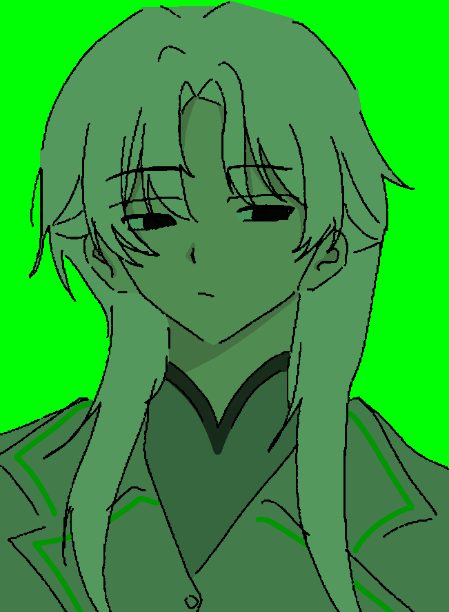

STAFF IDENTIFICATION CARD

🐉 雷米 (RAYMI)
사번 : UE-M001
직급 : 책임자
DEPARTMENT : BIO DEPARTMENT
STATUS : ● ACTIVE
SECURITY LEVEL : LEVEL 5
PERSONAL INFORMATION
FULL NAME : 雷米
HEIGHT : 200cm
SPECIES : Human
AGE : 30
IQ : ???
FAMILY RELATIONS : 부모님, 고양이 두 마리 (앵두, 앵화)
BIOGRAPHICAL RECORD
어릴 적부터 생물 연구 분야에 관심을 가지고 성장한 연구자.
레이미를 전담 관리해왔으며, 그녀의 입사 이후 SCHMEETTERLING에 동반 입사.
생물학 분야에 높은 흥미를 가지고 있으며 다수의 연구 논문 발표 기록 존재.
PERSONALITY
예의 바른 연구자
타인과의 접촉은 많지 않지만 항상 존댓말을 사용하며 친절하게 설명하는 태도를 유지.
침착함
감정보다는 관찰과 분석을 우선하며 연구 상황에서도 냉정함 유지.
생명 연구 집착
생명체의 구조와 변화에 대해 강한 호기심을 보임.
RELATIONSHIP RECORD
양메이
장기간 전담 관리 대상. 현재 높은 신뢰 관계 유지.
칭위
충성도가 높은 직원으로 확인. 다소 시끄럽다고 평가하지만 협력 관계 유지.
⚠ NOTANDUM
매수 시도를 권장하지 않습니다.
해당 인물은 이미 특정 대상에게 완전히 신뢰를 보이고 있습니다.
흰 머리에 대한 질문 금지.
개인 기밀 사항으로 분류됩니다.
FINAL SECURITY NOTE
관리 등급 : BIO CORE RESEARCHER
위험도 : CLASS A
권장 사항 : 연구 방해 금지.